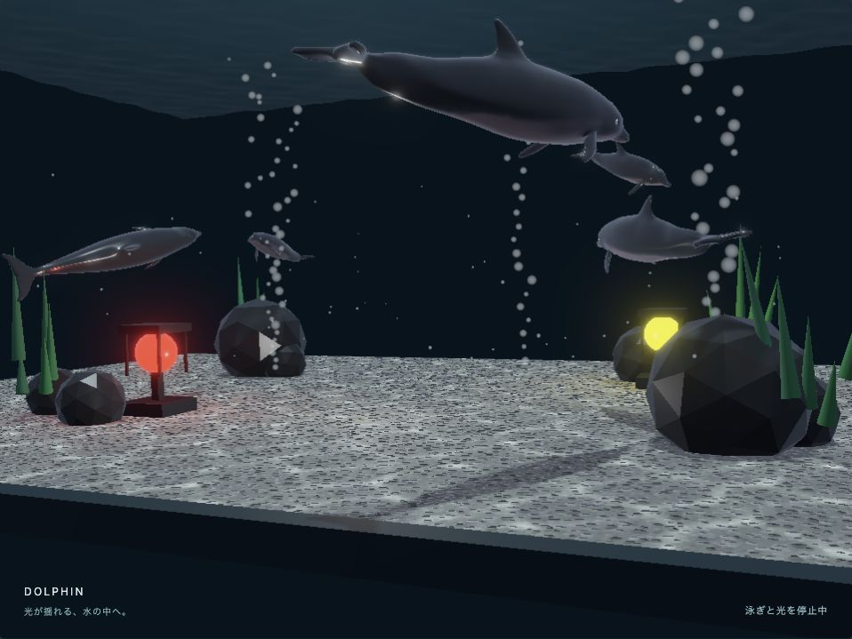

aquarium — 水光のアクアリウム
English | 日本語

概要
提供されたイルカのGLBを読み込み、5頭のインスタンスをボーンアニメーションで泳がせる小さな水中展示です。
上部には水中から見上げる波打つ水面を表示します。
PBRの材質・環境光に、WaterBodyのコースティクス、霧、微小な浮遊粒子、水底から上がる泡を組み合わせます。
イルカ、水底、岩、海草へ集光を設定し、アニメーションする物体にも光が追従する使い方を示します。
実行方法と操作
Webサーバー経由でaquarium.htmlをWebGPU対応ブラウザで開いてください。
- ドラッグ：視点を回転。ホイール：拡大・縮小。
- 「水面上から見る／水中から見る」：視点を切り替え、上からの屈折と水中の薄い水面を比較。
- 「一時停止」：泳ぎ、遊泳経路、波、粒子を止める。視点は動かせます。
- 「コースティクス」：すべての集光をON/OFF。
- 「イルカにも光を当てる」：イルカの受光だけを切り替える。
水底と水面は18m × 12mです。岩・海草・ランプは拡大前の位置を保ち、
水面の高さも6mのままです。床のUVも実寸を維持し、砂利の大きさを変えません。
コードの読む順序
scene.js：実寸UVの手続き材質で床を作り、flat shadingのicosphereの岩と海草を配置します。岩はダークグレーでroughnessを0.28にし、水中の光を反射させます。main.jsのstart()：WebgAppとPbrRendererを準備し、GLBを読み込みます。model.instantiate()：一度読み込んだGLBから計5頭を作ります。各個体のrootを遊泳用の親Nodeへattachし、身体と別rootの眼を一緒に動かします。geometryとtextureを共有し、骨と再生状態は個体ごとに持ちます。updateSwimming()とswimmingPath.js：5頭を個別の立体経路に沿って毎秒0.8〜0.95mで進めます。中心、水平の傾き、輪郭のうねり、上下動の周期と位相を個体ごとに変え、2頭は逆方向に周回します。距離表によって旋回中も移動速度を保ちます。上下を含む経路の接線から姿勢を作り、モデルの頭（+Z）を移動方向へ向けます。骨の動きはGLBのclipを再生し、終了時に再開します。
5頭とも上下振幅は±0.45mです。親Nodeの高さはそれぞれ2.55〜3.45m、2.7〜3.6m、2.4〜3.3m、小さい2頭は3.0〜3.9mと2.1〜3.0mです。身体の傾きを含めて水底から距離を取り、上昇・下降に合わせて頭の傾きも変えます。
WaterBody.addReceiver()：水底と配置物は強さ0.65、イルカは強さ1で登録します。親Nodeへの登録は子孫のShapeも対象になります。setCaustics()：描画を止めて非同期のON/OFFを完了し、描画を再開します。waterSurface.js：コアのWATER_WAVE_WGSLを使い、水面meshの頂点と法線をComputeで更新します。波長は0.6、波高は0.05です。pagehide：renderer、モデルruntime、手続き材質と手作りShapeを解放します。
使用しているwebg機能
WebgApp.loadModel()：GLB、埋め込み画像、PBR材質、skin、animationの読み込み。Node.attach()：GLBの階層を保持したまま、遊泳用の親Nodeへまとめる。playAllAnimations()/setAnimationsPaused()：clipの再生と停止。PbrRenderer：環境光付き遅延PBR、影、霧、tone mapping、通常のframe callback。WaterBody/PbrRenderer.setWater()：波から作った集光を対象の不透明PBR拡散反射へ追加。ProceduralMaterials：石と砂利の色、Normal map、粗さを生成。ComputeParticleEmitter：浮遊粒子と泡の発生、移動、寿命、停止。
泡は水底の3か所から白青の小粒子として発生させます。半径は0.04〜0.095m、
上昇速度は発生場所ごとに0.65／0.8／0.95m/sとし、横方向にもわずかに散らします。
一定の鉛直速度に対して水面までの距離から寿命を求め、水面に達する直前に消します。
加算合成の強さは0.25に抑え、背景が透ける薄い泡にしています。
「一時停止」は泡の発生と上昇も止めます。
イルカの親Nodeには、進行方向を軸とするねじれも加えています。
2頭（大きい個体1頭と小さい個体1頭）は最大±90度、残り3頭は最大±10度です。
個体ごとに位相と周期をずらし、頭を移動方向へ向けたまま身体をゆっくり傾けます。
水底の赤・黄色のランプは、金属色の台・柱・枠と発光する灯体で作っています。emissive_factorで灯体をそれぞれの色で発光させ、別のpoint lightで周囲を照らします。
控えめなBloomを加え、灯体のまわりに光のにじみを出しています。
確認ポイント
- イルカの眼と身体が一緒に移動し、尾のボーンアニメーションが続くこと。
- 集光が水底・岩・イルカの形状へ投影され、イルカだけを対象外にできること。
- 停止中にカメラを動かせ、再生すると泳ぎと光が再開すること。
- 集光OFFでは通常PBRと水面表示を保つこと。水面用GPU資源は継続して使い、集光用の生成処理を止めます。
表現の範囲
コアの上から見る水面合成をsurfaceEnabled: trueで使い、反射・屈折・RGB吸収を合成します。
カメラが波の最高点より上にある場合は、水中用meshを隠し、コアの屈折背景へ二重に水面を描かないようにしています。
水中から見える水面は、高さ6mの薄い半透明PBR meshとして追加しています。
不透明度は0.08で、青い発光色も控えめにしています。
水面の巻き順と法線は上向きにそろえ、水中からは裏面を表示します。
水面と集光はコアの同じ波形・時刻を使います。水中用meshの反射・色は表示用の近似で、
水中からの全反射や屈折合成は行いません。
水中の青みと遠方の減衰は照明と霧で作っています。霧はlinearで、視点から16mまでを保ち、
16〜40mで薄い青緑色へ徐々になじませます。densityは0.005で、遠方でも最大25%の混合です。
カメラから物体までの水中屈折や
色別の透過吸収を計算するサンプルではありません。集光は上からの鉛直方向光を使います。
床のNormal mapは照明用の凹凸を表し、頂点の高さは水平に保ちます。
泡は低輝度の点粒子で表現します。
モデルは提供されたdolphin1_20260719.glbを同名で同梱しています。
白目と瞳は独立したメッシュです。読み込み後に身体へ焼き込まれた原点補正と
同じ平行移動を目のNodeにも加え、頭の位置に合わせています。
元のテクスチャとclipを使用し、大きい3頭の親Nodeは1.25倍・1.1倍・1.05倍です。
小さい2頭は、基準の1.25倍に対して2/3の大きさ（約0.8333倍）です。
赤いランプは[-3.2, 0.85, 2.2]、黄色はその対角の[3.2, 0.85, -2.2]に置いています。
身体は材質のcolorを[0.52, 0.43, 0.48, 1]にしてtextureへ掛け、黒寄りにしながら緑みを抑えています。
眼の材質は維持します。白い腹が上からの照明だけで暗くならないよう、
下側に白い補助光を置いて水底の照り返しを近似し、初期視点を低めにしています。
岩は共通のbuildIcosphere()を1段細分・面法線で使い、
各80面の陰影と輪郭でゴツゴツした表面を表現します。
水面表示やOFF時の資源・画質の詳しい比較はwater、
GLBの読み込み契約はgltf_loader、
原理とAPIはbook第35章を参照してください。